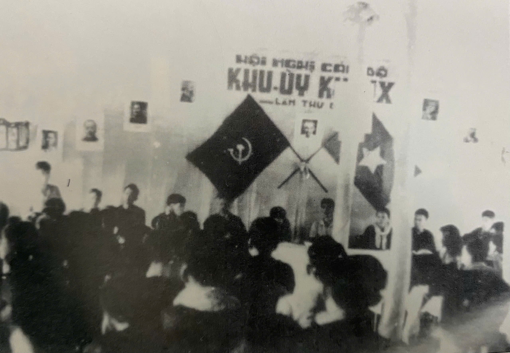

NĂM 1946
Thành lập Phòng Chính trị Chiến khu 8
Tháng 10/1946, Phòng Chính trị Chiến khu 8 ra đời, thực hiện các nhiệm vụ công tác chính trị của Quân khu ủy giao cho, phân công cán bộ nắm tình hình tư tưởng, chính trị, dựng Đảng; Hướng dẫn cơ sở làm công tác chính trị, sử dụng các loại hình văn nghệ, báo chí, tranh ảnh, điện ảnh, ca kịch, lưu động để động viên tinh thần chiến đấu của bộ đội; hướng dẫn cho bộ đội biết vận động nhân dân ủng hộ và tham gia kháng chiến cứu nước.